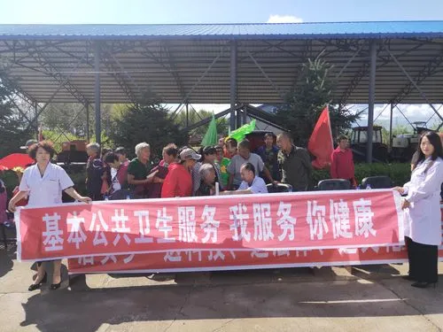
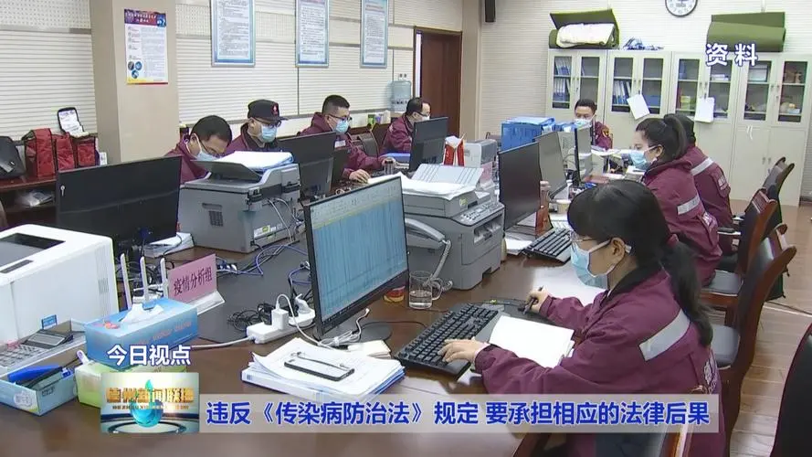
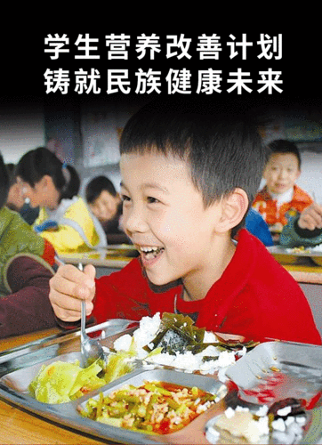

医疗保险的完善
今年是中华人民共和国成立70周年，我国医疗保障制度经历了70年的光辉历程。从适应计划经济体制的劳保、公费医疗，到适应市场经济体制的城镇职工医疗保险制度，再到全民医保制度的建立，我国医疗保障制度改革发展一直与时代共进，与人民健康同行。现在，我们已经开启了全面建设新时代中国特色医疗保障体系的新征程，这将进一步推动我国医疗保障制度的发展，更好地保障人民健康。
健全的医疗保健网络
中国在过去70年中不断进行创新和改革，建立了政府主导、相关部门参与和全社会共建的卫生工作机制，形成了管理、筹资和服务三大体系基本完善的卫生工作体系。在这个体系中，包括疾病防控、卫生保健、诊断治疗、护理和康复等服务形成了较为完善的体系。
基础性的医疗卫生保障体系
我国公共卫生事业的发展主要依赖于政府的投入，并通过多种渠道筹集资金，如城镇职工(居民)医疗保险、农村合作医疗、大病保险等多种形式，建立了“广泛覆盖、保障水平较低”的医疗卫生保障体系。
公共卫生设施的建设不断得到加强，同时环境污染得到有效遏制
我们国家注重保障民众的健康与安全，从小到大的生活环境都受到了重视，例如我们已经实现了所有城市居民都使用安全卫生饮用水，同时在2016年，农村集中式供水覆盖人口比例也提高到了82%。
2017年，我国338个地级及以上城市的可吸入颗粒物(PM 10 )平均浓度比2013年下降了22.7%。这表明我国在大气污染治理方面取得了显著的成果。

我们国家注重保障民众的健康与安全，从小到大的生活环境都受到了重视，例如我们已经实现了所有城市居民都使用安全卫生饮用水，同时在2016年，农村集中式供水覆盖人口比例也提高到了82%。
2017年，我国338个地级及以上城市的可吸入颗粒物(PM 10 )平均浓度比2013年下降了22.7%。这表明我国在大气污染治理方面取得了显著的成果。
传染病、地方病防治成果显著
随着我国社会经济的快速发展，传染病大规模的暴发和流行现象已显著减少，一些重大传染病已经被消灭或消除，而其他传染病也得到了有效的控制。这表明我国在传染病防控方面取得了巨大的成就。
自1964年以来，中国没有再次发生天花疫情，自2000年起，我国保持了无脊髓灰质炎的状态，并于2008年成为全球首个消灭丝虫病的国家，同时也达到了世界卫生组织消除新生儿破伤风的标准。此外，我国大多数免疫规划疫苗的广泛应用，已将传染病的发病和死亡率降至历史最低水平。这表明我国在传染病防控方面已经取得了令人瞩目的成就。

随着我国社会经济的快速发展，传染病大规模的暴发和流行现象已显著减少，一些重大传染病已经被消灭或消除，而其他传染病也得到了有效的控制。这表明我国在传染病防控方面取得了巨大的成就。
自1964年以来，中国没有再次发生天花疫情，自2000年起，我国保持了无脊髓灰质炎的状态，并于2008年成为全球首个消灭丝虫病的国家，同时也达到了世界卫生组织消除新生儿破伤风的标准。此外，我国大多数免疫规划疫苗的广泛应用，已将传染病的发病和死亡率降至历史最低水平。这表明我国在传染病防控方面已经取得了令人瞩目的成就。
居民营养和健康状况取得显著进步
2016年，我国5岁以下儿童低体重率、生长迟缓率和贫血患病率分别下降至1.49%、1.15%和4.79%，提前实现了《中国儿童发展纲要(2011-2020年)》的目标。此外，我国儿童身体发育指标明显提高。以2014年13岁的孩子为例，与30年前同样年龄的孩子相比，男孩身高增加了8厘米，女孩身高增加了6厘米，男、女孩子的体重均增加了11公斤以上。这些数据表明，我国儿童的身体健康状况得到了明显的改善。

2016年，我国5岁以下儿童低体重率、生长迟缓率和贫血患病率分别下降至1.49%、1.15%和4.79%，提前实现了《中国儿童发展纲要(2011-2020年)》的目标。此外，我国儿童身体发育指标明显提高。以2014年13岁的孩子为例，与30年前同样年龄的孩子相比，男孩身高增加了8厘米，女孩身高增加了6厘米，男、女孩子的体重均增加了11公斤以上。这些数据表明，我国儿童的身体健康状况得到了明显的改善。
医疗保障是国家发展的重要组成部分，也是人民幸福生活的基本保障。自建国初期以来，中国政府一直高度重视医疗保障的发展，并通过一系列的政策措施，逐步建立了全民医疗保障体系，为国家的发展提供了坚实的支撑。未来，中国的医疗保障事业将继续发展壮大，为人民的幸福生活和国家的发展提供更加坚实的保障。